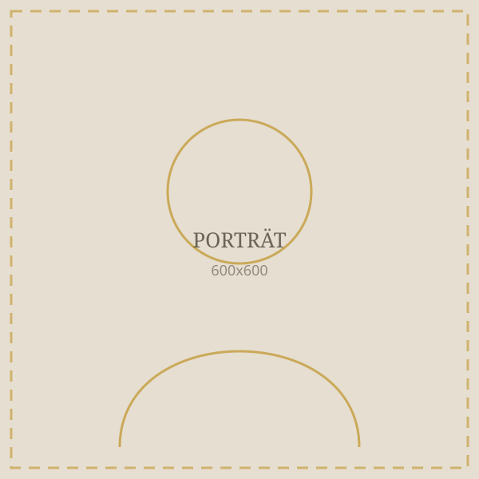

Nataliya Salavei
Violine · Bielefelder Philharmoniker
Nataliya Salavei wurde 1986 in Minsk geboren und erhielt im Alter von sechs Jahren ihren ersten Violinunterricht am Musik-College der Belarussischen Staatlichen Musikhochschule. Mit neunzehn Jahren zog sie nach Deutschland und studierte an der Hochschule für Künste Bremen bei Prof. Katrin Scholz, wo sie ihr Diplom- und anschließend ihr Masterstudium abschloss.
Während ihrer Ausbildung wurde sie bei nationalen und internationalen Wettbewerben ausgezeichnet, darunter beim Internationalen M.-Erdenko-Wettbewerb in Russland und beim Internationalen Wettbewerb „Verfemte Musik" in Schwerin. Weitere künstlerische Impulse erhielt sie in Meisterkursen unter anderem bei Prof. Thomas Brandis und Prof. Roman Nodel.
Seit 2014 ist Nataliya Salavei Mitglied der ersten Violinen der Bielefelder Philharmoniker.